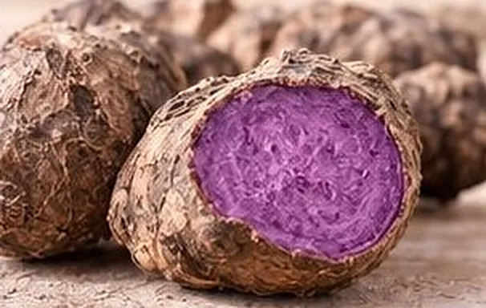
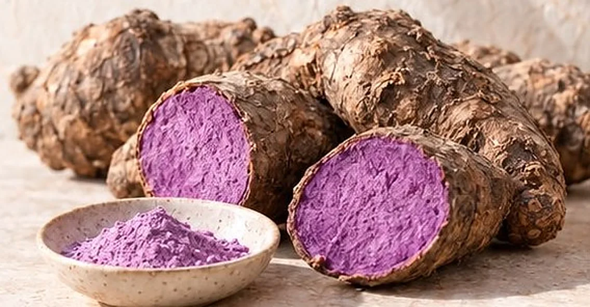
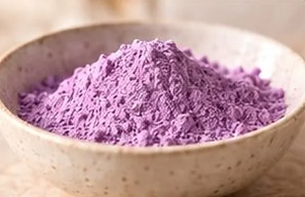

La racine
Une igname naturellement violette, à la chair intense.
Livraison offerte dès 45 €
À la découverte de l’ube
L’ube est une igname violette,
différente du taro et de la patate douce.


Une igname naturellement violette, à la chair intense.

Une poudre d’ube au violet délicat, facile à incorporer dans vos boissons et vos recettes.

Un latte, un gâteau, un moment gourmand, à votre façon.
Le taro est un tubercule à chair blanche mouchetée de violet, au goût plus neutre. L’ube est une igname à la chair entièrement violette, naturellement douce, aux notes de vanille et de noisette.
Comptez 2 à 3 g par latte, et environ 10 à 15 g pour un cake de 6 parts.
Tous fonctionnent : lait entier pour l’onctuosité, lait d’avoine pour une mousse gourmande, lait de coco pour un clin d’œil aux Philippines.
Bien fermée, au sec, à l’abri de la lumière et de la chaleur.